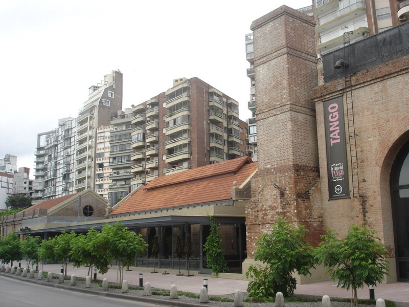

Росарио
Росарио — город в провинции Санта-Фе, третий по числу жителей после Буэнос-Айреса и Кордовы. Расположен на 300 км к северо-западу от Буэнос-Айреса, на западном берегу Реки Парана. В городе умеренный климат, с температурами от +11 °C до +25 °C. Население Росарио составляет около 1,2 млн человек.

История
Первое колониальное поселение было основано Сантьяго де Черногория, который был назначен мэром в 1751 году. 27 февраля 1812, Генерал Мануэль Белграно впервые поднял недавно созданный Аргентинский флаг на берегах Парана.
До 1850 Росарио был маленькой деревней с портом. 5 августа 1852 Росарио был объявлен городом после запроса Хусто Хосе де Еркуизой, который также открыл международную торговлю. К 1880 Росарио стал первым экспортным выходом Аргентины и к 1887 его население состовляло уже 50 000 жителей.
В 1911 французская железнодорожная компания Феррокарил Росарио y Пуэрто Белграно открыла линию между Росарио и главной морской базой Аргентины. В 1926 население Росарио увеличилось до 407 000 жителей, 47 % из них были иностранцами, многие из которых прибыли из Европы после первой мировой войны.
В 1946 к власти пришел Хуан Перон. Город получил выгоды национализации и субсидирования многих отраслей промышленности.
В 1969 рабочие и студенты выступили против диктатуры. В течение самой диктатуры, начатой в 1976, сотни граждан были убиты правительством.
В 1983 Аргентина возвратилась к демократическому правлению, но Гиперинфляция 1989 года вызвала экономический крах страны, в городе начались грабежи и бунты. Под администрацией Менем ситуация стала еще хуже, поскольку индустриальный сектор города был демонтирован иностранной конкуренцией.
В 1995 безработица достигла 21.1 % и большая часть населения Росарио упала ниже черты бедности.
В 2001 было восстановлено народное хозяйство, экономическая ситуация Росарио, улучшилось. Бум в сельскохозяйственном экспорте вызвал большое увеличение потребительских расходов и инвестиций.
Ёще несколько красивых видов Росарио


Это можеть быть интересно: